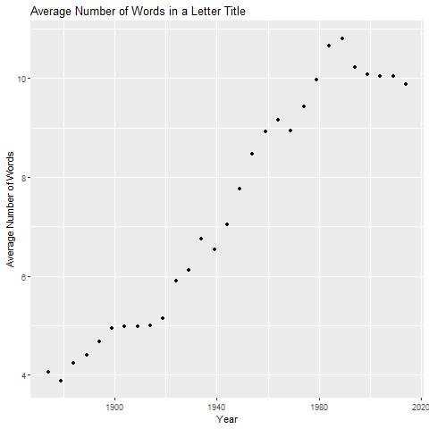

From this animated bar graph showing the most popular words over time, I found a few things interesting. First, you can see
that over time there are a few words that become popular and remain popular. Second, you can see that the most popular terms
rotate very quickly towards the beginning of the publication, and later they stabilize a fair bit.
Letter titles have gotten longer over time.

If we look at the average length of a title over time from published Letters, we can see a fairly steady increase from
about 4 words per title in 1874 to almost 11 words per title in 1984, when it stopped increasing.
Nature doesn't publish many more Letters now that in the late 1800's
Looking at the volume of Letters that Nature published over time, we are currently seeing a long decrease, where we might
even expect to see a lower rate in the near future than we did in the late 1800's. There is quite an increase from 1920 to 1960,
then a spike and peak in the 1960's.
 Looking at the volume of Letters that Nature published over time, we are currently seeing a long decrease, where we might
even expect to see a lower rate in the near future than we did in the late 1800's. There is quite an increase from 1920 to 1960,
then a spike and peak in the 1960's.
Looking at the volume of Letters that Nature published over time, we are currently seeing a long decrease, where we might
even expect to see a lower rate in the near future than we did in the late 1800's. There is quite an increase from 1920 to 1960,
then a spike and peak in the 1960's.